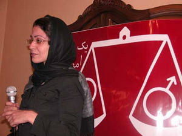

کانون زنان ايراني -ترانه بنی یعقوب:
"بهاره هدايت از افتخارات جنبش زنان ایران است و ما تا زمان آزادي اش از هيچ تلاشي فرو گذار نخواهيم كرد."اين را فعالان جنبش زنان خطاب به خانواده بهاره هدايت مي گويند.
بهاره هدايت فعال دانشجویي؛ صبح روز دوشنبه 18تير ماه به همراه پنج تن ديگر از اعضاي دفتر تحكيم وحدت مقابل دانشگاه اميركبير دستگير شد.
ديروز-پنج شنبه- تعدادي از فعالان جنبش زنان در حمايت از او نزد خانواده اش رفتند.بهاره و ديگر اعضاي دفتر تحكيم وحدت روز 18 تير كه نماد جنبش دانشجوئي است در اعتراض به برخوردهاي اخير با دانشجويان امير كبير و ديگر دانشجويان دستگير و روانه زندان اوين شدند.اما اكنون با گذشت بيش از پنج روز از دستگيري بهاره هنوز خبري از او به خانواده اش نرسيده است.
او سال گذشته نيز در تجمع 22خرداد ميدان هفت تيركه در اعتراض به قوانين تبعيض اميز عليه زنان برگزار شد چند روزي را در همين زندان به سر برده بود.مادر بهاره كه چادر سفيد رنگي بر سر دارد با صداي گرفته از وضعيت دخترش اظهار نگراني مي كند :" بهاره تنها دختر دستگير شده اين جمع است اما با اين همه تاكنون با خانواده اش تماسي نداشته است و اين مرا بسيار نگران مي كند. هميشه از بهاره مي پرسيدم اگر روزي مشكلي برايت پيش بيايد من و پدر پيرت چه كاري بايد انجام دهيم كه او هميشه در پاسخ مي گفت مادر نگران نباش در چنين مواقعي دوستانم پي گير كارهايم خواهند بودو لازم نيست شما كاري كنيد."
اما وقتي مادر بهاره خبر دستگيري او را به همراه همه دوستانش مي شنود بسيار نگران مي شود و احساس مي كند او تنها مانده است.آهي مي كشد و ادامه مي دهد:"اما با ديدن شما روحيه ام واقعا عوض شد و فهميدم هنوز كساني هستندكه به بهاره و دوستانش بيانديشد"
سپيده خواهر بهاره كه دختر شانزده ساله اي است آرام و با طمانينه به حرف هاي ميهمانان گوش مي دهد.و گاهي در تاييد حرفهاي آنها سري تكان مي دهد اما غم عميقي در ته چشمانش به چشم مي خورد.بهاره آنقدر دختر پر شور و فعالي است كه جاي خالي اش در خانه شان كاملاً به چشم مي خورد.
مادربهاره از روز دوشنبه روز دستگيري دخترش مي گويد:روزي كه او صبح خيلي زود خانه را ترك كرد و به مادر ش گفت اگر دير برگشت نگرانش نشود:«به او گفتم خدا پشت و پناهت»وبعد ادامه مي دهد:«بهاره هدف و راهش را بر گزيده و كسي هم نمي تواند مانع فعاليتهايش باشد؛من از همه فعاليتهايش با خبرم و برايش دعا مي كنم.»
او كه از روز دستگيري بهاره به دليل فشار عصبي كمر درد شديدي گرفته است از اينكه نمي تواند تلاشي براي آزاديش انجام دهد اظهار تاسف مي كند.اما خديجه مقدم فعال امور زنان با لحني مادرانه و مهربان دلداريش مي دهد:«بدانيد كه دانشجويان تنها نيستند و همه گروه ها و فعالان اجتماعي از آنان حمايت مي كنند.همه كسانيكه به عدالت معتقدند هرگز آنان را تنها نمي گذارند.»
او مي گويد براي ديدن مادر بهاره هدايت لحظه شماري مي كردم تا ببينم مادر او چگونه زني است كه دختر ي اين چنين تربيت كرده است.دختر ي كه همواره منافع جمع را بر منافع فردي ترجيح مي دهد.به گفته او:«فعالان امور اجتماعي براي حق خواهي فرزندانشان هر كاري انجام مي دهند اما هرگز التماس نمي كنند چون فرزندانشان هيچ جرمي مرتكب نشده اند.»
مادر بهاره كه غم در چشمانش لانه كرده،با بغضي فرو خورده مي گويد:«اما بهاره ناراحتي چشمي داشت،چشمانش چند روز پيش عفونت شديدي كرده بود مي ترسم به وضعيت سلامتش بي توجهي شود.»اما دلداري هاي اطرافيان تا حدي او را آرام مي كند.
نوشين احمدي خراساني ،فعال جنبش زنان در همين زمان يادآور مي شود:«اين بچه ها هيچ كار غير قانوني انجام نداده اند؛طبق اصل 27 قانون اساسي برگزاري تجمعات قانوني است ضمن اينكه اين تحصن كوچك و شش نفره بوده است.بهاره هدايت از افتخارات جنبش زنان ایران است و ما فعالان امور زنان تا زمان آزادي او و دوستانش از هيچ تلاشي فرو گذار نخواهيم كرد."
مادر بهاره تك تك ميهانان را با مهرباني بدرقه مي كند ؛ خدیجه مقدم، نوشين احمدي خراساني ،پروين اردلان،جلوه جواهري،مريم حسين خواه،زارا امجديان؛سوسن طهماسبي،ناهيد كشاورز، سارا لقماني ،سميه فريد و ديگر فعالان جنبش زنان و نیز دو تن از اعضای کمیسون زنان تحکیم وحدت در اين ديدار حضور يافتند تا به خانواده اين فعال دانشجويي يادآوري كنند كه بهاره تنها نيست.